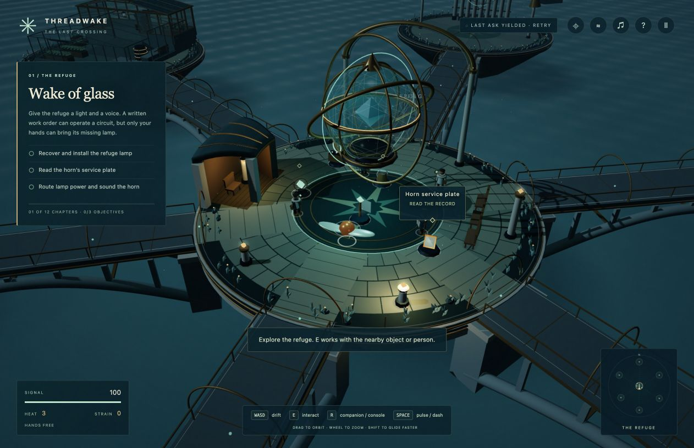
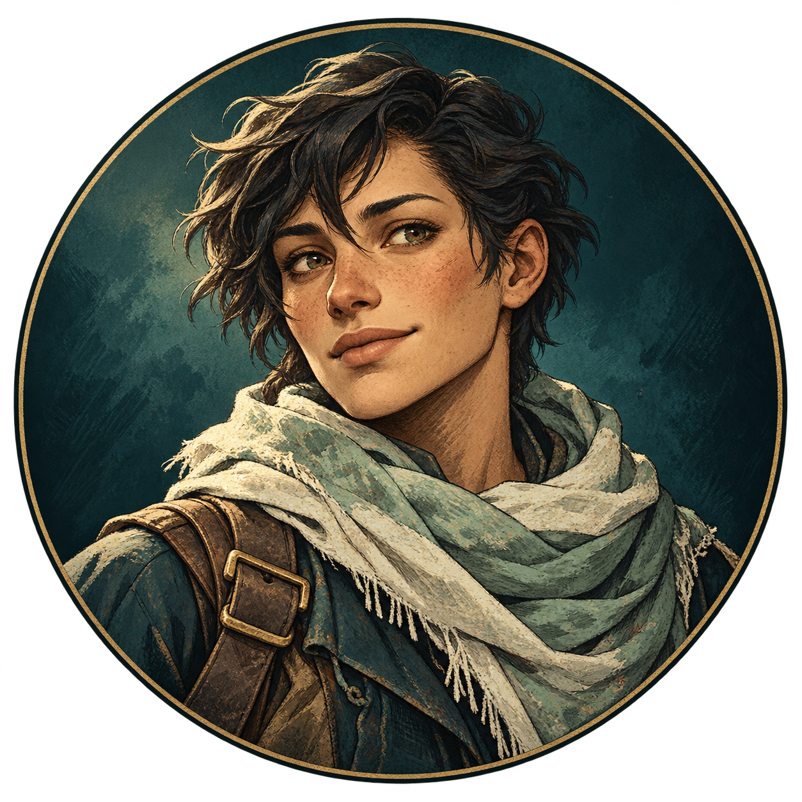
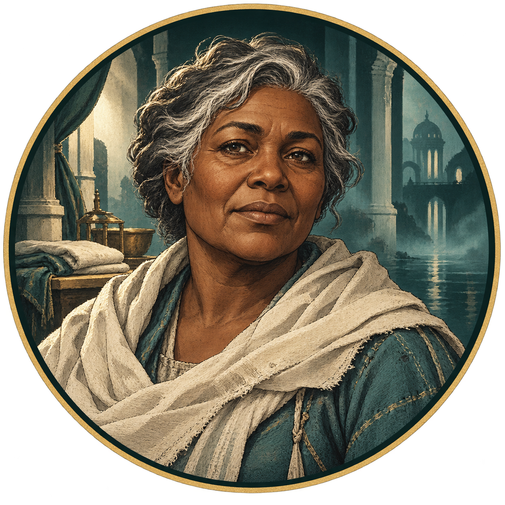
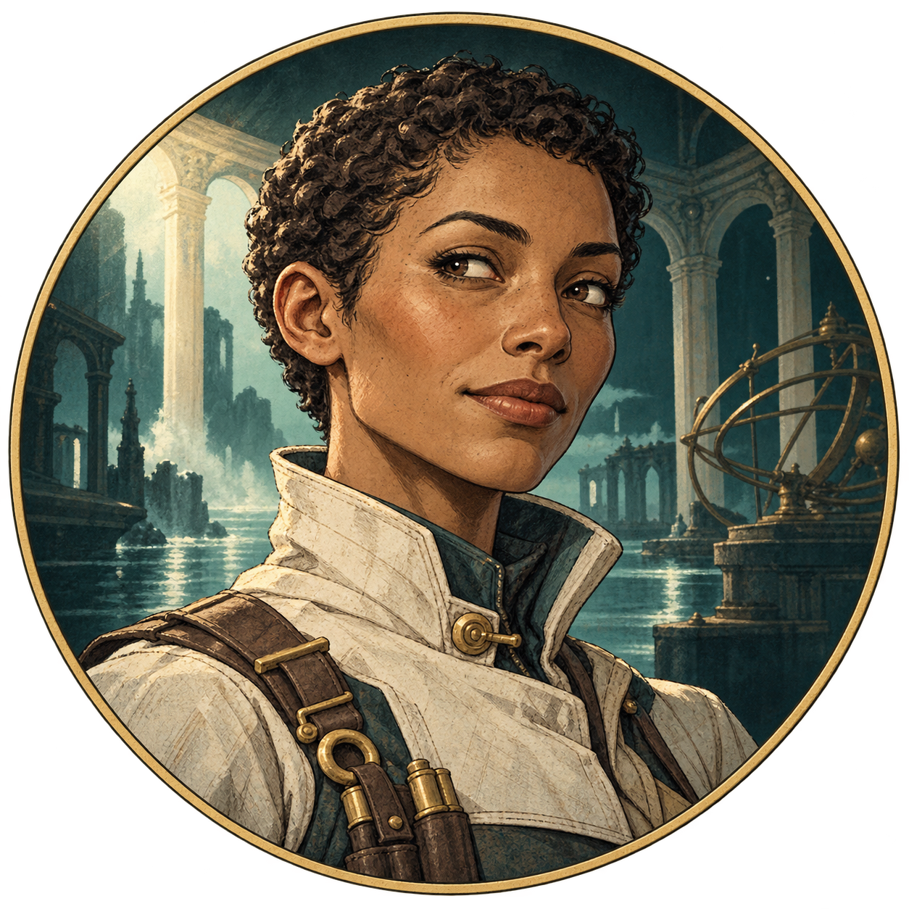

The Last Crossing · Player’s edition
A light
for the crossing.
A place worth repairing. Four people worth listening to. A field guide for the work you’ll do together.

Before you begin
Every light is someone waiting.
Above a dark sea, a floating observatory waits for a way home. Its bridges lead to quiet receivers, flooded shelves and a greenhouse whose warmth matters to people nearby. Passengers are still waiting below. There is work to do before they can leave.
You guide a newly awakened mind through these places, helping the observatory’s people prepare their last crossing. Read a machine’s plates, carry the part it needs, and put a careful plan into motion. A work order can begin in your own words; you review what it will actually do.
Four companions bring practical knowledge, different concerns and help with clear terms. Listen, compare the records, and decide what you can promise. Every reserve you spend and duty you accept becomes part of the crossing you are preparing together.
Take your time. This guide explains how to read the world without giving away its solutions. You can pause whenever you need a break and return to your saved crossing later.
01 · A gentle beginning
Your first five minutes
- Find your feet.
Choose Begin the long wake. Move with WASD or the arrow keys. Drag the scene to turn the camera; use the wheel to adjust your view. Movement follows the camera, so turn it until the next path feels natural.
- Let the Refuge introduce itself.
Read the objective list on the left. Walk toward a marked object until its interaction prompt appears, then press E. The prompt names the object you will actually use; clicking a distant label does not operate it.
- Find the first light.
Your opening tasks involve the refuge lamp and the horn’s service plate. Carry the lamp to its socket, and read the plate before operating the console. You can carry one essential part at a time. G puts a held part down on nearby safe ground.
- Look, then act.
Open a discovered machine with E or the nearby-console shortcut R. Manual controls are always a valid way to learn. Read the displayed conditions before you try an operation. When the chapter’s tasks are complete, the objective panel tells you which gold report marker to visit.
J opens the district map. L opens your journal. H brings back the short field guide. Close a panel with Esc; press it again from the world to pause.
You can start without making a model request. Read plates, carry parts and use manual controls. Introduce local work orders and captured signals when you reach them.
02 · Make yourself comfortable
A small set of controls
| Input | What it does |
|---|---|
| W A S D / arrows | Move relative to the camera. |
| Drag / wheel | Orbit the camera / zoom. |
| Shift / Space | Glide faster / pulse-dash. Slow down near an unfamiliar edge. |
| E | Use the named nearby object: read, carry, install, talk or operate. |
| R | Open a nearby console, or Iona’s companion radio. |
| G | Put down your carried part. |
| J / L | District map / journal of discoveries, people and signals. |
| H / M | Short field guide / sound on or off. |
| Esc | Close the current panel or instrument; from the world, pause or resume. |
Comfort and access
Zoom in to inspect a machine and back out to travel. All essential instructions and conversations are text; sound adds atmosphere. In the voice routing table, use Pause and Step to inspect the moving trace at your pace. Optional hints and recovery controls are available at instruments.
The current game is designed for keyboard and mouse or trackpad. It does not yet offer key rebinding, controller/touch play, a reduced-motion game setting or a qualified screen-reader gameplay path. This guide supports keyboard navigation, browser text zoom, reduced-motion scrolling and printing. Its mobile layout is for reading; it is not a claim of mobile game support.
03 · Listen before you promise
The people beside you
Each companion has practical knowledge and a different concern. Ask about discovered records and available agreements. Read the separate agreement card before accepting a cost or a duty.

Marin
Courier
Marin brings warmth, practical sense and a little irreverence to a difficult job. Behind every passenger total, Marin sees someone waiting. Ask about the docks, work orders or the help a courier can offer. A promise matters here because someone may have to hold the line that makes it possible.
“You have the look of someone who can hear the building.”

Vale
Refuge steward
Vale has beds, names to account for and too little heat. Patient and direct, the refuge steward makes room for fear while keeping the costs of care in view. Vale can explain what an agreement commits and why a reserve matters both to people waiting now and to the work ahead.
“I have beds, a list of names, and too little heat.”

Iona
Crossing engineer
Iona wants to know what a machine is doing before deciding what to change. Expect precise explanations, curiosity and a dry sense of humor. The crossing engineer helps you connect plates, controls and physical causes. When an observation is missing, Iona treats that gap as a reason to look more closely.
“The plates identify the controls and the interlocks.”
Mara
Archive keeper
Mara speaks quietly and chooses words with care. As archive keeper, Mara asks which record supports an account, whose names it includes and what it leaves out. Bring patience to these conversations. The archive holds people’s experiences, and preserving a record also means taking care with how you understand it.
“Look at what a record omits as carefully as what it says.”
04 · Find your bearings
Seven lights in the sea
- The Refuge
- Shelter, waiting people and your four companions. Return to compare notes and consider commitments.
- Lower Docks
- Passenger cradles, cables and freight. Working machinery can bring people waiting below into shelter.
- Lantern Terraces
- Glass, growing beds and a heater serving the refuge. A working greenhouse where careful repairs become everyday care.
- The Listening Choir
- Receivers and echoes. Listen to what the instruments tell you and keep the records you discover.
- Wind Gallery
- An exposed district of vanes, baffles and rigging. Its machinery must contend with the wind around it.
- The Drowned Index
- A waterlogged archive of shelves and records. Give its contents the same care you give its machinery.
- The Crossing Crown
- The great transfer rig. Its cradles and instruments put preparations from across the observatory to work.
05 · Careful words, physical work
Put a plan into motion
Every machine begins with something you can inspect. Its plate reveals controls and the conditions they need. Manual controls work in both editions. In the optional local-model edition, describe a work order and let the model translate it into up to eight operations and wait conditions.
The steps below use local-model mode. In the authored demo, operate the discovered machine controls directly; no interpretation request is needed.
Read the service plate. Find the available controls and what each operation needs.
Open the work-order area, describe your steps and choose Interpret locally. Read the returned preview, its order and costs. Revise a draft that doesn’t match your intention.
Confirm the work order. Watch the machine and its operating record; read the first unmet condition if it stops.
A preview is a plan, not a completed repair. Some machines need actual tests before their outcome is known. Machinery can keep moving while a panel is open; close the panel and press Esc again if you want to pause the game. Hiding the game tab also stops its simulation.
A conversation is a commitment only when you accept it
Companions offer authored topics and briefings in both editions. In local-model mode, the model can match your question to discovered records and eligible agreements. Read the exact terms on the card; only your explicit acceptance spends a reserve or assigns a duty. Keep the journal close when accounts disagree.
06 · A nudge you can measure
Listen to the whole signal
Choose the edition you are playing. The browser demo uses labeled authored calibrations. Measured captures and activation steering require the optional local-model edition. The optical puzzles use complete spectra in either edition.
A captured profile contains three bands: Bridge, Shelter and Surge. Steering temporarily changes an internal activation during a local model run. Your chosen direction is a target; the returned action and measured spectrum tell you what actually happened. The model’s saved weights are unchanged.
ILLUSTRATIVE PROFILE · NOT A LIVE MEASUREMENT
Focused or broad?
Focused steering changes one token position. Broad steering reaches more of the processed sequence. Stronger or broader steering can add strain; it does not guarantee a better profile. Read the cost before capturing. A completed capture is retained automatically and applies its costs; inspect the retained receipt afterward.
What does it earn?
The first retained action at a signal grants its district benefit: Bridge opens a shortcut, Shelter recovers one heat, or Surge banks 75 seconds of faster movement. Retuning changes the spectrum without farming another first reward.
Two honest ways to continue. A local capture records an actual model result. Recovery → Use authored calibration supplies a designed reference when you want to play without inference. The game labels their origins separately; both can be used in the instruments.
07 · Follow the path before you commit
Read an instrument
Blend retained profiles, turn the rotors and watch the safe dry trace. A rotor turns relative to the ray entering it. A prism adds another turn: Bridge left, Shelter straight, Surge right. Read the named band as well as its color.
- Check the receivers.
Each phase specifies required contacts and a power window. Follow the marked route and required distinct contacts; revisiting the same contact does not create a new one.
- Inspect the dry trace.
At the world voice table, click a cell to turn it and hover to inspect. Pause freezes the ordered trace; Step advances it one leg. Drag to orbit and use Frame bench to regain the working view.
- Read the risk, then commit.
Changing a rotor or mixture is safe during the dry trace. A commit into the fragile reserve can add strain and a permanent scar. Read the warning beside Commit before energizing a configuration. Optional hints and solution reveals sit inside the instrument’s recovery/help controls.
Completed chambers keep their recorded inputs. Later retuning does not rewrite a seal you have already earned.
08 · Observe, compare, repair
A repair worth testing
In the Wind Gallery, the clinic return-water line asks you to diagnose a physical loss. Read the service notes and pickup table, compare actual test readings, and decide what support the repaired line should use. A proposed work order cannot stand in for a successful test or commissioning.
The records used by this circuit replay historical signal measurements. Selecting one does not make a fresh capture. The essential basin and the larger clinic return are different operating outcomes; compare the displayed support terms, heat costs and service result before you commit. Iona’s help requires her separate agreement. A physical support remains an alternative.
You do not need the diagnosis or control settings from a walkthrough. The discovered service notes, reading table and current machine record are the evidence this repair asks you to use.
09 · What you carry forward
Keep your crossing
Your people, parts, repairs and choices save automatically in the current browser. Use Continue your crossing from the title to return. Pause before stepping away. Starting a new crossing replaces the save in the current slot.
Stay with the same address and browser profile. 127.0.0.1:8769 and localhost:8769 are different save locations. A different browser, port or private window also has separate storage. Keep only one active game tab for a given save slot: two tabs can overwrite each other’s progress. Clearing site data can remove your crossing.
Use the journal to revisit discovered facts, accepted agreements and retained signals. A fall returns you to a checkpoint and affects your condition. If you put a part down, look for its marker and approach it to pick it up again.
- Heat
- A shared reserve for certain machines and agreements. Check the displayed cost and what will remain.
- Strain and scars
- Stress carried by the signal network. Strong steering and some overloads can increase it; instrument warnings explain the current risk.
- Signal
- The HUD’s SIGNAL gauge is your current condition. A captured signal at an instrument is the retained Bridge/Shelter/Surge spectrum.
Local play and privacy
The authored demo makes no model requests. Optional local-model requests go to your loopback host and run on your computer; model downloads are a separate opt-in. Your save lives in browser storage. Diagnostics are off by default; enabling THREADWAKE_DIAGNOSTICS=1 can retain prompts and results in local logs. Review logs before sharing them. Gemini/Argon helped review development and is not a service used by the running game.
10 · Open the observatory
Install & launch
Start with the authored demo. No model download is required. Threadwake is a public alpha for a desktop browser with WebGL2, JavaScript and keyboard plus mouse or trackpad. The demo uses designed signal calibrations and authored briefings. It does not present those results as neural measurements.
Run the demo locally
- Get the public game.
Download and extract the public repository, or clone it. Open a terminal in its
threadwakefolder. Install Python 3.11 or later if it is not already available. - Start the host.
Run the command below. It uses Python’s standard library; a virtual environment, Node.js and model files are not needed for the demo.
- Open your crossing.
Visit
http://127.0.0.1:8769/and choose Begin or Continue once the scene is ready. Keep the host terminal open while playing. Press Ctrl+C there when you want to stop it.
python3 -B server.pyOn Windows, use py -3 -B server.py if your Python command is py. On macOS, Launch.command is an alternative launcher. It opens the public game and only reuses a host whose identity and mode match. If a different application occupies the port, leave it running and use python3 -B server.py --port 8770, then open that address.
The hosted browser demo and your local host have different browser save locations. Opening index.html directly is not a substitute for serving the game. The editable field guide is web/guide.html; its PDF is available from the download link.
Optional: use local models on Apple Silicon
The local edition uses MLX on Apple Silicon macOS. It needs a compatible Python 3.11–3.14 environment and the two pinned model checkpoints described in models.json. Model weights are separate downloads, about 8.8 GB in total, with additional disk space and memory required. A minimum RAM requirement has not been qualified. The game’s software license does not replace the models’ terms.
Install uv, then run these commands from the repository root. Read the model cards and terms shown by the setup tool before accepting them.
uv sync --locked --extra local-model
.venv/bin/python setup_models.py status
.venv/bin/python setup_models.py download --model all --accept-model-license
.venv/bin/python setup_models.py verify
.venv/bin/python -B server.py --local-modelThe setup tool downloads only after that explicit acceptance. Launching the game does not fetch model weights. The default macOS cache is ~/Library/Application Support/Threadwake/models; THREADWAKE_DATA_DIR can choose another location outside the checkout. Both checkpoints are required for the complete local-model mode. See the repository’s docs/LOCAL_MODEL.md for details.
In local mode, E2B produces measured action spectra with temporary activation steering; E4B interprets work orders and matches discovered records without that steering. The game labels local measurements separately from authored calibrations. Manual controls, briefings and recovery references remain available if inference is busy or unavailable.
This is an experimental alpha. The public model checkpoints, fresh-machine installation, complete campaign duration and sustained performance across hardware have not been fully qualified. Installing model files is not a promise that every request will succeed. The default demo remains the simplest way to begin.
11 · Keep the next step small
When you need a hand
The page is blank, or Begin stays unavailable.
Give the scene time to load. If Retry loading appears, use it once. Confirm the launcher/host is running and you are at http://127.0.0.1:8769/. If it still fails, keep the visible error message and Terminal output for a bug report. Avoid repeatedly starting hosts or clearing your save data.
Local-model mode reports a missing environment or model.
Start the default demo without --local-model to play without model files. For optional inference, follow the local-edition setup, then run .venv/bin/python setup_models.py status and .venv/bin/python setup_models.py verify. Both pinned models and the optional runtime are required. Launching does not download missing files.
The port is in use, or the browser cannot connect.
Try the existing game address first. If it is Threadwake, use that running host. Otherwise leave that application running and choose another port with --port 8770; use that address consistently for your save. If a launcher-owned window was closed, reopen Launch.command.
The local mind says busy, yielded or unavailable.
The model may be sharing resources with other work. Continue with manual controls, authored briefings and Recovery calibrations. The status badge describes the last request and can stay busy after conditions change. When you actually need another response, make one ordinary retry; repeated automatic retries do not help.
A work order is rejected or stops partway through.
Read the reason beside the preview or current program. Inspect the relevant service plate, check the first unmet condition and carry any required part yourself. Revise the order, or use manual controls for that step. A successful interpretation does not mean the machine has already completed the work.
I am near an object, but E uses something else.
Read the bottom interaction prompt. It names the currently selected nearby object. Move a little closer to the intended object or approach from a clear side until that name changes. Orbit the camera if another fixture covers it. A distant floating label is a signpost, not a remote button.
All my objectives are ticked, but the chapter has not ended.
Read the new instruction at the top of the objective panel. Open the map with J, find the gold report marker it names, walk there and press E.
I have no heat left, or a signal puzzle seems impossible.
Read the available physical-support alternatives and exact agreement costs. At an instrument, inspect the whole spectrum and current receiver requirements, then use its optional hints or Recovery controls if you want assistance. An authored calibration is a valid play aid and remains visibly labeled.
Continue is missing, or I see a different crossing.
Return to the same browser profile, address, port and save slot you used before. Private browsing and a different hostname have separate storage. Do not clear site data as a troubleshooting step. If a restore warning appears, preserve its wording; starting anew can overwrite the current slot.
The game feels choppy, silent or hard to read.
Check M and the browser’s audio setting for sound. Adjust the camera with the wheel for a clearer view. For performance, stop duplicate game tabs you opened yourself and try a smaller browser window. A busy local model can be left alone while you play manually. This build has not passed sustained-performance qualification on a range of hardware.
How do I report a problem usefully?
Keep the chapter name, visible error or blocked condition, what you tried, your browser and whether a local request was running. A screenshot is useful. Share the relevant detail with the Threadwake contributors; your prompts and full local logs may contain private text. Use the public repository’s issue templates for reproducible bugs. There is no automatic crash-upload service.
12 · The work behind the lights
Credits & acknowledgments
Threadwake is an independent experimental game by the Threadwake contributors. It brings authored people, places and rules together with local language-model tools.
- Creative direction
- Threadwake contributors: concept, priorities, play feedback and the standard the game is working toward.
- Design & development
- Codex and collaborating development agents: game systems, narrative implementation, interface, procedural world, sound synthesis, documentation and testing.
- Independent review
- Gemini 4 Argon High through isolated development consultations, plus separate judge and adversary agents. Reviews guide revisions; they are not a claim of endorsement or complete-game certification.
- Local intelligence
- Optional Google Gemma checkpoints from mlx-community, pinned in models.json and run with the public MLX / MLX-LM backend. E2B supplies measured action spectra; E4B translates work orders and matches discovered records. Model files are not bundled; their cards and terms apply separately. The demo’s calibrations, game rules and companion briefings remain authored.
- Illustration
- Companion portraits and the slate roof texture were created with OpenAI’s image-generation tool. The guide’s opening image is an unmodified gameplay capture. Its map and teaching diagrams are original explanatory artwork, not model measurements.
- Music & sound
- Procedural Web Audio ambience and effects. Gemini/Argon contributed the four companion motifs; they were inspected and integrated into the game’s synthesizer.
- 3D rendering
- Three.js, by the Three.js authors, distributed under the MIT license. Read the bundled license.
- Type & delivery
- System fonts in the web guide; portable print fonts in the PDF. Scripts and assets are bundled locally. No remote font or cloud game-inference service is required during play. Code is Apache-2.0; original content is CC BY 4.0 to the extent rights are held. Read the notices and content license.
A work in progress, honestly labeled. This package does not declare the full game finished. Independent whole-game, meaningful-duration and sustained-performance checks remain open. Credits describe actual contributions; development reviewers do not appear as runtime companions.